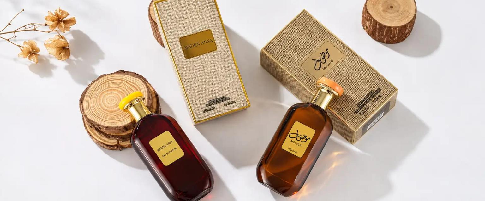

عطور خليجية بنفحات شرقية تناسب مختلف الأذواق

يدخل شخصان المجلس نفسه، أحدهما يترك أثرا دخانيا ثقيلا من العود، والآخر رائحة مسك نظيفة لا تلتقط إلا عند الاقتراب. كلاهما يضع عطرا من العائلة نفسها، لكن الذوق مختلف تماما. هذا ما يجعل عطور خليجية كثيرة صالحة لأشخاص لا يتشابهون، بشرط أن يعرف كل منهم أي نفحة شرقية تلائمه وبأي شدة.
ما الذي يمنح العطر طابعه الخليجي؟
الطابع الخليجي لا يأتي من مكون واحد، بل من طريقة في التفكير بالرائحة. في مقابلة صحفية نشرت في أبريل 2026، شرحت خبيرة العطور جوليا رودريغيز من دار Eurofragance أن الحياة الاجتماعية في المنطقة تدور حول أماكن مشتركة قريبة مثل المجلس والمقاهي الليلية، لذلك ينتظر من العطر أن يغني أجواء المكان دون أن يطغى على الحاضرين.
وتضيف أن الحرارة تجعل الروائح الخفيفة تتلاشى بسرعة، ولهذا تميل الأذواق في الخليج إلى تركيبات أغنى بقواعد أثقل. كما يجمع كثيرون بين الزيت العطري والبخور والبخاخ للوصول إلى توقيع شخصي، ويضعون العطر على الجلد والملابس معا، لأن القماش يحفظ بنية الرائحة مدة أطول بينما يمنحها الجلد حركة وشخصية.
ولمن يريد أمثلة جاهزة قبل الدخول في تفاصيل كل نفحة، يعرض دليل عطور خليجية خيارات نسائية ورجالية مبنية على العود والمسك والعنبر، ويتوقف عند العادات الصغيرة التي تضعف ثبات الروائح الشرقية.
هذه الخلفية تفسر لماذا لا يكفي أن تسأل "هل أحب العطور الشرقية؟". السؤال الأدق: أي جانب منها يناسبني، العمق أم الدفء أم النقاء أم الزهر؟
خريطة الأذواق: أي نفحة شرقية تشبهك؟
لمن يحب العمق والدخان: العود
يعد العود حجر الأساس في العطور الشرقية، وله طيف واسع من الحالات: دخاني، أو طبي، أو جلدي، أو حلو، أو نظيف، أو غارق في الورد. لذلك فمن يقول إنه لا يحب العود ربما جرب نوعا واحدا منه فقط.
إذا كانت تجربتك الأولى مع العود قاسية، ابدأ بتركيبة تمزجه بالورد أو المسك قبل الانتقال إلى العود الصريح. أما من يعرف العود جيدا ويبحث عن نسخة مركبة، فيمكنه أن يقارن بين عود آسام الجاف وعود إندونيسيا الأكثر استدارة.
هذا التباين بين نوعين من العود واضح في عطر عود زحل من أمواج، إذ تذكر صفحة الدار الرسمية أنه إصدار محدود طرح في دول الخليج فقط، يفتتح بالفلفل الأسود والوردي والهيل، ويضم في قلبه الباتشولي وعود آسام، وفي قاعدته العنبر وعود إندونيسيا. وتقول أمواج إن تركيز الزيوت فيه يبلغ 30% وإن المركز عتق 42 يوما مع رقائق العود وخشب البلوط، وهي معلومات من الدار نفسها.
لمن يحب الدفء المستدير: العنبر والزعفران
العنبر في كثير من العطور الحديثة توليفة دافئة يركبها العطار، وتظهر على الجلد ناعمة ومستديرة وفيها حلاوة خفيفة. يناسب هذا المكون من يرى العود حادا لكنه يريد رائحة شرقية واضحة، وهو الشريك المعتاد للعود والورد والتبغ.
أما الزعفران فيضيف لمسة حارة تقترب من الجلد المدبوغ، ويرفع العطر نحو الفخامة. وتحضر توليفات العنبر بالزعفران كثيرا في موسم الأعراس لأنها روائح قوية الأداء وواضحة الأثر. من يحب الحضور الاحتفالي سيجد في هذا الثنائي ما يبحث عنه، ومن يفضل الهدوء يكفيه عطر يظهر فيه الزعفران لمسة في القمة لا محورا للتركيبة.
لمن يحب النقاء القريب من الجلد: المسك
المسك من أقدم مكونات العطر في المنطقة، وتذكر رودريغيز في المقابلة نفسها بأنه ورد في القرآن الكريم وارتبط بالطهارة والجمال، وأنه كان يمزج تقليديا بالعنبر والصندل والعود والورد والبخور. وتوضح أن المسك النظيف المستخدم اليوم يصنع من جزيئات صناعية تحاكي الدفء الطبيعي للجلد.
هذا النوع يناسب من يريد أن يشم عطره من يقترب منه فقط، ومن يعمل في مكتب مغلق، ومن يحب أن يضع طبقة تحت عطر أثقل لتليين حدته.
وتقدم عطور المسك من كايالي ضمن مجموعة Freedom مثالا عمليا على تنوع هذه النفحة، فالمجموعة تضم أربعة عطور يتمحور كل منها حول المسك: Musk Santal 34 يجمع الصندل الكريمي والمسك مع البرغموت واللبان، وMusk Bouquet 27 يميل إلى الزهر مع اليلانغ يلانغ والياسمين والورد التركي ومسك الفانيليا.
لمن يحب الزهر الغني: الورد
الورد في العطور الخليجية ليس الورد المنعش الخفيف المألوف في العطور الغربية. الورد الطائفي يزرع على المرتفعات في السعودية، ويوصف بأنه أكثر امتلاء ودفئا وأقرب إلى العسل من الورد العادي، ويمزج عادة بالعود والزعفران والعنبر والبخور.
من يحب العطور الزهرية لكنه يجدها ناعمة أكثر من اللازم سيجد في هذا الورد وزنا مختلفا. ومن يريد صيغة أخف، يمكنه البحث عن تركيبات حديثة تجمعه بالمسك النظيف أو الصندل.
لمن يحب الانتعاش الراتنجي: اللبان والبخور
اللبان خيار مفاجئ لمن يظن أن الشرقي يعني الثقل، فله إشراق يقترب من الحمضيات في البداية، ثم يستقر في رائحة راتنجية نظيفة فيها طابع معدني، ويصلح عمودا للعطر من النهار إلى الليل، يبرد الروائح الحلوة ويحدد الزهور ويرفع الأخشاب. أما البخور المحترق فيبقى أداة لتعطير الملابس والبيت أكثر منه عطرا يوضع على الجلد.
خفيف أم غني؟ اختيار الشدة حسب الوقت والمكان
الذوق وحده لا يكفي، فالنفحة نفسها قد تكون مناسبة صباحا ومزعجة في مكان مغلق. هذه قاعدة عملية تساعد على الضبط:
- للنهار والعمل: المسك النظيف، واللبان، والورد الممزوج بالمسك، بكمية قليلة على الجلد.
- للزيارات والمجالس: العنبر أو الورد الطائفي مع لمسة عود، مع مراعاة أن المكان قريب ومشترك.
- للمساء والمناسبات الكبيرة: العود الصريح والزعفران والعنبر الكثيف، ويمكن هنا إضافة طبقة على الملابس.
- للسفر والأماكن المزدحمة: المسك أو اللبان وحدهما، لأن العود والزعفران يزدادان حضورا كلما ضاق المكان وطالت مدة الجلوس فيه.
وفي الحر تحديدا، تتبخر الروائح الخفيفة بسرعة كما تقول رودريغيز، لذلك قد يدوم مسك بقاعدة خشبية أطول من عطر زهري منعش، حتى لو بدا الثاني أقوى عند الرش.
اختبار عطور خليجية على الجلد قبل الشراء
شريط الورق يكشف القمة فقط، والعطر يتغير على الجلد مع الوقت. لهذا تنصح رودريغيز بارتداء العطر على الجلد بضع ساعات أو يوما كاملا قبل الحكم عليه، لأن إفرازات الجلد والميكروبيوم والحرارة والرطوبة كلها تغير طريقة ظهور الرائحة، وجلدك هو المرجع الوحيد الموثوق.
اختبر نفحة واحدة في كل مرة، وضعها على معصم واحد حتى لا تختلط الروائح، واطلب عينة صغيرة إن أمكن لتجربتها في يوم عادي بعيدا عن هواء المتجر المكيف وروائحه المتداخلة. ثم سجل ما تلاحظه بعد ساعة ثم بعد أربع ساعات: هل اختفى الزعفران؟ هل أصبح العود أنعم؟ هل بقي المسك قريبا من الجلد كما توقعت؟ هذه الملاحظات البسيطة تكشف ذوقك الحقيقي أسرع من أي قائمة ترشيحات، وتمنعك من شراء زجاجة أعجبتك دقيقتين فقط.